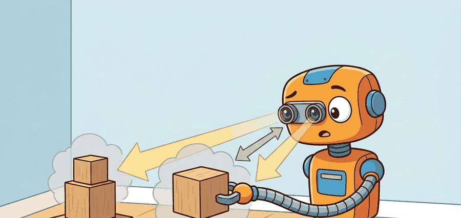
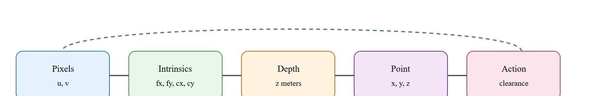
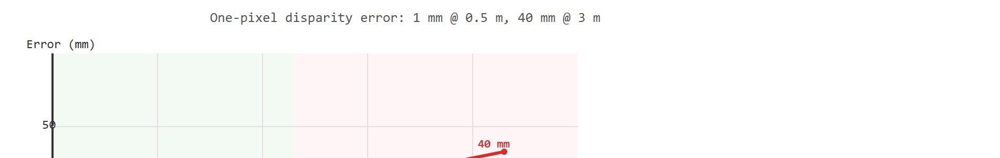

"Depth is useful when scale errors are smaller than the robot's clearance and contact margins."
A Patient Embodied AI Agent

This section assumes familiarity with the pinhole camera model, coordinate frames, and the intrinsic/extrinsic matrix derivation covered in section 4.6. The metric-scale reasoning developed here carries directly into section 27.4, where optical flow provides a complementary motion-based cue that shares the same frame conventions. Both depth and flow recur in Part IX alongside grasp approach and collision clearance, particularly in section 42.4 on perception for manipulation.
A robot arm reaches for a cup. The monocular depth network predicts the cup is 42 cm away. The real distance is 31 cm. The gripper closes on air. That 11 cm error is not a rounding issue: it is a failed grasp, a knocked-over object, or a collision. Modern depth networks have become impressively accurate on benchmarks, yet robots still crash because benchmark accuracy and metric scale in a live robot frame are different things. This section develops the full contract: how raw depth signals are converted into trusted, frame-anchored, uncertainty-bounded distances that a planner can act on, and exactly where that chain breaks in practice.
Two depth maps can look pixel-for-pixel identical on a screen, both crisp and plausible, yet one guides a gripper cleanly around a mug while the other drives it straight through the cup: the difference is not in the image, it is in whether anyone checked the metric scale before the planner believed the numbers.
A depth map that looks correct but carries the wrong scale is not a measurement: it is a confident lie the planner has no way to detect until hardware hits something.
The contract here maps pixels to metric state: depth source, camera intrinsics, extrinsics, uncertainty, timestamp, and the planner or controller that consumes the resulting geometry.
Depth becomes embodied knowledge when an error bound changes clearance, grasp approach, foot placement, or stopping distance.
Figure 27.3.1 should be read as a metric-scale contract: depth source, scale calibration, frame transform, uncertainty, and action consumer determine whether the robot can reach or avoid safely.

The pinhole camera model lifts a depth pixel into a 3D camera-frame point.
$X_c=\frac{(u-c_x)z}{f_x},\quad Y_c=\frac{(v-c_y)z}{f_y},\quad Z_c=z,\quad z_{\mathrm{stereo}}=\frac{fB}{d}$
The first three equations use metric depth directly. The stereo equation shows why small disparity errors compound at range. When disparity $d$ is small, the same one-pixel error that moves a near object by 2 cm moves a far object by 20 cm. Far obstacles and reflective surfaces therefore deserve extra caution. In concrete terms, a single-pixel quantization error on a 6 cm baseline stereo rig causes roughly 1 mm of depth error at 0.5 m but swells to nearly 40 mm at 3 m. That 40x amplification comes from a sensor limit the neural network reading the disparity image cannot see. The disparity error amplification diagram below plots this growth. It splits the range into a near-field safe zone where the error stays predictable and a far-field risk zone where it amplifies past useful clearance margins.
The baseline $B$ sets the geometric leverage. Cameras 6 cm apart (typical on a drone) resolve depth far more coarsely than cameras 30 cm apart (typical on a humanoid torso), because a small $B$ shrinks the denominator $fB$ and amplifies every disparity error into distance error. For grasping, a wrist-mounted narrow-baseline camera is unreliable beyond roughly 0.8 m without a depth-sensor backup.

Stereo depth triangulates the same physical point seen from two laterally separated viewpoints. Each camera images the point at a slightly different horizontal pixel position, and the difference in those positions is the disparity $d$. The fixed, calibrated camera geometry fixes the angle between the two lines of sight. The triangle formed by the two optical centers and the point then resolves to a unique metric distance. A larger $B$ opens a wider angle. This better conditions the triangle and sharpens the distance estimate.
Before reading on, consider: if a one-pixel disparity error shifts a nearby object by 2 cm, what does it do to an object at the far end of a warehouse aisle?
When using a monocular depth model such as Depth Anything v2 or Metric3D v2, always verify metric scale against at least one known-size anchor in the scene (a calibration board, a robot link with known length, or a lidar sweep) before the depth estimate reaches the planner. The scale_factor = z_lidar / z_mono correction is a single scalar multiply and takes under one millisecond, but skipping it is the single most common source of silent clearance errors in manipulation pipelines. If no anchor is available at runtime, mark the depth estimate with a scale_unchecked flag and widen the planner's safety margin by the model's documented scale-error percentile for that range.
| Design Choice | Use When | Control Risk |
|---|---|---|
| Stereo | Outdoor robots and textured scenes | Low texture and far range create unstable disparity. |
| RGB-D or time-of-flight | Indoor manipulation and tabletop mapping | Reflective, transparent, or black materials can corrupt depth. |
| Monocular depth | Semantic priors and fallback estimates | Metric scale may drift without calibration or known references. |
The depth sources above fail in distinct ways. The smallest way to internalize the back-projection contract is to run it by hand on a single pixel and watch the metric point fall out.
Code Fragment 27.3.1 implements the back-projection equations with one pixel and one depth value. This is the smallest useful check before passing points into Open3D or a planner.
# Back-project one depth pixel through camera intrinsics.
# The output is a metric 3D point in the camera frame.
fx, fy = 615.0, 615.0
cx, cy = 320.0, 240.0
u, v, z_m = 350.0, 260.0, 1.20
x_m = (u - cx) * z_m / fx
y_m = (v - cy) * z_m / fy
point_c = (round(x_m, 3), round(y_m, 3), z_m)
print(point_c)Trace the stereo equation $z=\frac{fB}{d}$ with concrete numbers for a 6 cm baseline rig. Focal length $f=615$ px, baseline $B=0.06$ m. A near object gives disparity $d=18.45$ px, so $z=\frac{615 \times 0.06}{18.45}=\frac{36.9}{18.45}=2.00$ m. Now inject a one-pixel error, $d=17.45$: $z=\frac{36.9}{17.45}=2.115$ m, an error of 0.115 m (about 11.5 cm). Repeat at close range, $d=73.8$ px: $z=\frac{36.9}{73.8}=0.50$ m. With the same one-pixel error, $d=72.8$: $z=\frac{36.9}{72.8}=0.507$ m, an error of just 0.007 m (7 mm). Same one-pixel sensor limit, same scene: the far estimate is roughly 16x more corrupted than the near one, because depth error scales with $z^2$ (differentiate $z=fB/d$ to get $|\Delta z|=\frac{z^2}{fB}|\Delta d|$).
Interpret this expected output tuple as a metric point in the camera frame, not an image-space feature. The lateral offsets are only a few centimeters, which is small enough to look harmless in pixels but large enough to change grasp clearance or foot placement.
Consider a mobile manipulator approaching a shelf edge at a measured depth of 0.50 m, planning a 0.05 m clearance stop. A 10 percent monocular depth scale error means the true distance is 0.45 m, which consumes the entire clearance margin and places the end-effector in contact with the shelf. The error is invisible in the depth image (the map looks plausible), undetected by the neural network (it reports high confidence), and only revealed at collision. This is the canonical failure pattern: scale drift accumulates silently, the planner inherits a corrupted metric, and the robot executes a motion that was geometrically valid given wrong numbers. The fix is not a better depth model alone; it is a pipeline that tracks calibration provenance, flags scale-unchecked estimates before they enter the planner, and maintains conservative uncertainty margins proportional to the depth source's known scale error at that range.
OpenCV's cv2.rgbd.RgbdOdometry and Open3D's o3d.geometry.RGBDImage.create_from_color_and_depth collapse back-projection into two function calls, and both default to millimeter depth units from RealSense D435 output. A Franka Panda pipeline that passes those millimeter values directly into an SE(3) (Special Euclidean group in 3D, representing rigid-body rotations and translations) grasp planner expecting meters will typically place the gripper roughly 1000x too far away (the raw scale mismatch between millimeters and meters); in practice this usually drives the arm past its joint limits and faults it before the first approach move, though the exact failure point depends on the workspace and target pose. The shortcut handles formats and vectorization, but it does not verify units, reject missing depth pixels on transparent cups, or confirm that the camera-to-robot-base extrinsic is current. Validate all three before the point cloud enters a planner or a Gaussian-splatting map update.
Think of a hiking map that uses a consistent but unstated scale: every trail, lake, and ridge is in the correct relative position, so navigation between landmarks feels right, but you cannot tell whether the summit is 3 km away or 30 km away without reading the legend. A monocular depth model in affine-invariant mode (meaning depth is predicted only up to an unknown global scale and an unknown additive shift, so neither the multiplier nor the zero-point is anchored to physical meters) is exactly that unlabeled map. The scene geometry is correctly ordered (the mug is in front of the wall, the shelf is above the table), but every distance is stretched or compressed by an unknown global factor. Plugging that map into a robot planner without finding the legend (a physical scale anchor) is how a gripper that looks perfectly positioned in the depth image ends up closing 11 cm from the cup.
A common assumption is that a depth network achieving low benchmark error will produce metrically reliable estimates in a robot pipeline. That assumption is wrong. Benchmarks measure accuracy in relative or affine-invariant terms. They do not anchor results to absolute metric scale for a specific camera and robot frame. A monocular model can rank scene geometry correctly (closer objects appear closer) while its absolute distances drift by a constant factor. That drift is invisible in the depth image, yet it directly causes grasp misses and collisions. Metric depth requires a full contract: pair each depth value with verified camera intrinsics, a current extrinsic transform, a scale anchor checked against a physical reference, and an uncertainty bound before the planner uses it.
Depth maps often fail silently on transparent cups, glossy tabletops, thin chair legs, and motion blur. The robot must know when depth is absent or unreliable, not only when it is numerically present.
Detecting scale drift after the fact (via the validator project or the lab below) tells you a depth estimate was wrong; it does not by itself stop a bad estimate from reaching the planner. The scale_unchecked flag introduced earlier in this section is the mechanism that connects the two: a perception node computes the flag at read time, a downstream safety filter widens the clearance margin whenever the flag is set, and only a depth estimate with a verified scale anchor (or a suitably widened margin) is allowed to reach the grasp or navigation planner. That flag-then-gate pattern, not a better depth network alone, is what turns "we can measure drift in a lab" into "the robot will not act on undetected drift."
A drone landing system can accept monocular depth for exploratory terrain scoring, but final descent should require scale-checked stereo, lidar, or trusted altitude sensing with a conservative uncertainty margin.
Amazon's Sparrow and Proteus manipulation systems pair structured-light or stereo RGB-D cameras with explicit scale verification against known tote and shelf dimensions before any pick. The depth-to-grasp pipeline rejects metrically implausible readings on shrink-wrapped and reflective packaging, exactly the transparent and specular failure modes that defeat raw monocular depth, falling back to a conservative re-scan rather than committing a low-clearance grasp.
For Depth estimation and metric scale, the perception result must answer what action changed, what uncertainty changed, and what log would reproduce the decision. Otherwise the output is still visualization, not embodied evidence.
Because every one of those failure modes stays invisible in the depth image itself, the only way to catch them is to evaluate depth through the actions it drives rather than through the picture it produces.
Evaluate depth through geometry-sensitive actions: record depth source, calibration version, transform, predicted clearance, selected trajectory, contact or collision outcome, and scale-error label.
Perturb textureless surfaces, reflective materials, range, lighting, and calibration offsets, then check whether the planner margin catches the depth error before execution.
Foundation depth models are improving fast, but robotics still needs calibrated scale, uncertainty, and temporal consistency. The open problem is not producing pretty depth, it is certifying when depth is good enough for contact or collision decisions.
Direction 1: Zero-shot metric depth from a single image. Depth Anything v2 (Yang et al., 2024) and Metric3D v2 (Hu et al., 2024) established (as of 2024) that large vision foundation models can produce metrically accurate monocular depth without camera-specific calibration files. The 2025 follow-on UniDepth v2 (Piccinelli et al., 2025, CVPR 2025) pushes further, jointly predicting camera intrinsics and metric depth from a single uncalibrated image, reducing deployment friction for robots that swap lenses or operate in uncontrolled lighting.
Direction 2: Temporally consistent video depth for moving robots. Single-frame depth models produce flickering estimates that destabilize planners. DepthCrafter (Hu et al., 2024) and Video Depth Anything (Chen et al., 2025) extend diffusion-based video generation priors to produce temporally smooth, geometrically consistent depth sequences over long video, addressing the jitter that corrupts optical-flow and SLAM (Simultaneous Localization and Mapping, the process of building a map of an unknown environment while tracking the robot's own pose within it) pipelines when the robot or the scene is in motion.
Direction 3: Uncertainty-aware depth for safe contact decisions. Scale error is silent in standard depth maps. Recent work from the Princeton Vision and Learning Lab (e.g., GaussianDepth, 2025) fuses monocular depth with 3D Gaussian representations to produce per-pixel scale uncertainty estimates, giving planners a principled signal for when to trust a depth reading and when to widen the safety margin.
Open problem for a PhD student: None of the current metric depth systems produce a certified uncertainty bound that degrades gracefully at the material and lighting boundaries where depth most often fails (transparent glass, specular metal, motion blur at object edges). A tractable thesis topic is conformal prediction (a statistical method that wraps a model's point predictions in an interval guaranteed to contain the true value at a chosen confidence level, without assuming a particular error distribution) applied to monocular depth: can a lightweight wrapper around an existing foundation model produce statistically valid per-pixel prediction intervals at real-time frame rates, and do those intervals shrink as the robot collects more structured-light or lidar observations of the same scene? The key challenge is that depth errors are spatially correlated and heteroscedastic (the error magnitude varies with range and surface material rather than staying constant), so naive conformal coverage guarantees break exactly where the robot needs them most.
Section 27.4 adds the time dimension: once metric depth is established, optical flow reveals how quickly regions move and whether the robot needs to react before a slower reconstruction pipeline can respond.
Yang, L. et al. (2024). Depth Anything V2. arXiv. https://arxiv.org/abs/2406.09414
Scales monocular metric depth estimation to 70 m using a ViT-L backbone and improved synthetic-to-real training. Read to understand how pseudo-label quality and backbone size jointly determine metric accuracy at outdoor robotic ranges.
Hu, W. et al. (2024). Metric3D v2: A Versatile Monocular Geometric Foundation Model for Zero-Shot Metric Depth and Surface Normal Estimation. arXiv. https://arxiv.org/abs/2404.15506
Achieves zero-shot metric depth across arbitrary camera intrinsics by canonicalizing depth before decoding. Read to understand how decoupling camera-space geometry from intrinsic parameters enables deployment without precise calibration files.
Keetha, N. et al. (2024). SplaTAM: Splat, Track and Map 3D Gaussians for Dense RGB-D SLAM. CVPR 2024. https://arxiv.org/abs/2312.02126
Demonstrates real-time Gaussian-splatting SLAM with simultaneous tracking and map densification. Read alongside the depth estimation material to understand how dense metric depth feeds directly into the Gaussian map update step.
Matsuki, H. et al. (2024). Gaussian Splatting SLAM. CVPR 2024. https://arxiv.org/abs/2312.06741
Extends Gaussian-splatting SLAM to monocular input using photometric and depth loss. Read to understand how monocular depth quality limits map scale accuracy and why metric depth models like Depth Anything v2 matter for SLAM pipelines.
OpenCV. Camera calibration and 3D reconstruction documentation. https://docs.opencv.org/4.x/d9/d0c/group__calib3d.html
Primary implementation reference for calibration, projection, stereo, and pose routines.
Open3D. RGB-D images and point cloud documentation. https://www.open3d.org/docs/release/tutorial/geometry/rgbd_image.html
Shows the practical library path from depth images to point clouds.
Beginner (weekend): Scale-anchor depth validator in PyBullet. Build a PyBullet tabletop scene with a known-size object (a 10 cm cube) visible to a simulated RGB-D camera, run Depth Anything v2 on the rendered RGB frame, compute the scale correction factor against the ground-truth depth buffer, and print a pass/fail report. The key challenge is wiring the PyBullet depth buffer (which is in normalized device coordinates) into metric meters so the comparison is apples-to-apples.
Intermediate (1-2 weeks): Grasp-clearance uncertainty pipeline with LeRobot and ROS2. Integrate a Metric3D v2 depth estimate into a LeRobot manipulation stack running under ROS2: publish a depth image topic, compute per-pixel uncertainty from the model's confidence output, back-project the gripper approach pixel into robot-frame coordinates using the calibrated extrinsic, and gate the grasp action on a clearance threshold that accounts for the uncertainty margin. The key challenge is maintaining calibration provenance across ROS2 node restarts so that a stale extrinsic transform is detected and flagged before it corrupts a live grasp plan.
Goal: Quantify how far a monocular depth model's metric scale drifts from true distance, and see firsthand that benchmark-good depth can still be metrically wrong. Tools: Python, PyTorch, the Depth Anything v2 (metric) checkpoint from Hugging Face, OpenCV, and the NYU Depth v2 sample set (or any RGB-D capture with a registered depth ground truth, including a RealSense D435 recording). Steps: Run the model on 20 RGB frames, then for each frame fit a single scale factor $s$ that minimizes $\lVert s \cdot z_{\text{pred}} - z_{\text{gt}} \rVert$ over valid pixels (a one-line least-squares solve). What to vary: the scene range (near tabletop vs. far room), surface material (matte wall vs. glossy or transparent objects), and the model variant (relative vs. metric checkpoints). What to observe: how much $s$ deviates from 1.0 across scenes (the scale drift), whether $s$ is stable within a scene but inconsistent across scenes, and where per-pixel error spikes (object edges, reflective and transparent regions). Plot the post-scale residual as a function of range to reproduce the $z^2$ error growth from the step-through above. Expect 5 to 15 percent scale error on uncalibrated metric models and far larger residuals on transparent surfaces.
Can you name the representation, the consuming action, the uncertainty or freshness field, and the failure label for Depth estimation and metric scale? If any one is missing, the section is not yet ready for a robot replay log.
Metric depth is a contract among pixels, intrinsics, units, transforms, and uncertainty; remove any one of those and the action estimate becomes suspect.
Given a camera with $f_x=600$, $c_x=320$, pixel $u=380$, and depth $z=2.0$ m, compute $X_c$. Then explain how a 10 percent depth-scale error changes a grasp clearance estimate.